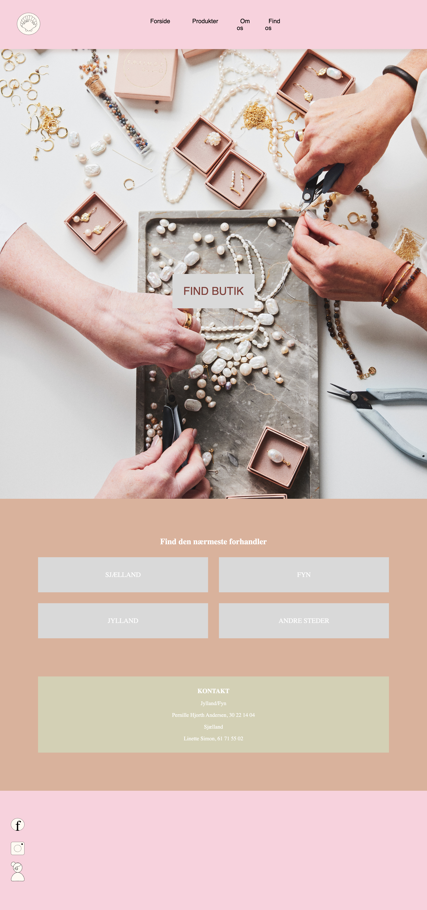
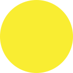

05


I tema 4 lagde vi ud med et kursus i Adobe Premier Pro. Alle fik rå videomateriale og stillet en opgave der lød på at, “klippe en video som max måtte være på et minut”. Dette var en sjov øvelse som hjalp en med at blive tryg i programmet, inden vi skulle i gang med den næste lille opgave i dette forløb. Vi kom også kort omkring lyd og lydredigering.
To og to skulle vi producere en 60-second-documentary, hvor vi skulle igennem alle steps der er, når man producerer en kortfilm. Præproduktion: Ideformulering, shotlist, lydliste og storyboard. Videre til videooptagelser (hvor vi undervejs havde fokus på procesfotos, mastershots, B-rolls og 5-shot-sequences). Dette lille projekt mundede ud i en 1-minuts kortfilm om et lille papir flys skæbne.
Den store opgave (gruppeopgave) på dette tema var en case-opgave hvor vi skulle re-designe en allerede eksisterende virksomhed website ved hjælp af alt det vi indtil videre på dette semester har lært. Der skulle være fokus på indholdsproduktion (foto- og videomateriale og redigering af dette). En del af opgaven var også at øve sig i at kommunikere professionelt med en kunde og mærke hvordan det kan være når man kommer ud på arbejdsmarkedet.
Vi har i løbet af de andre temaer benyttet os af GitHub, men i dette tema skulle vi bruge det som samarbejdsværktøj. Det er nemlig et godt værktøj når man skal arbejde sammen om at skabe et website, for Github hjælper med at gemme, dele og skrive kode sammen. Dette gør det ved hjælp af det som hedder “repository” og “branches”, som gør at man kan se hinandens kode undervejs.
På billeder kan man se nogle udpluk fra det færdige projekt. Websitet kodede jeg i fællesskab med to medstuderende. Vi redesignede smykkefirmaet "FRIIHOF OF SIIG"s hjemmeside. En hjemmeside som ikke bestod af meget, andet end en forside, lidt "bag om info" og information om hvor de forhandler deres smykker. Vi valgte beholde nogle af elementerne de allerede havde, men fik selvfølgelig redesignet det og tilføje en webshop. Dette er et ønske fra firmaet, så vi gav vores udkast på dette. Vi producerede al indhold selv og skabte et helt nyt site vi kunne præsentere i plenum for vores medstuderende.
SE SITET HER